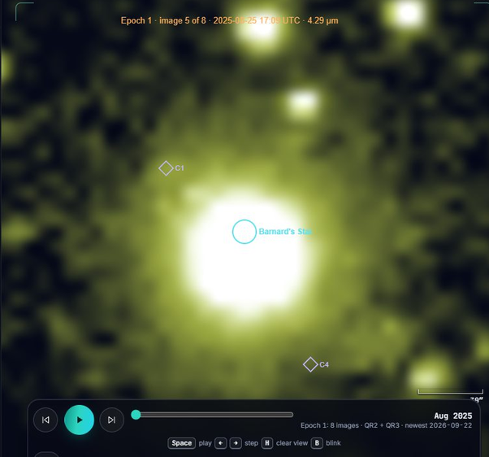
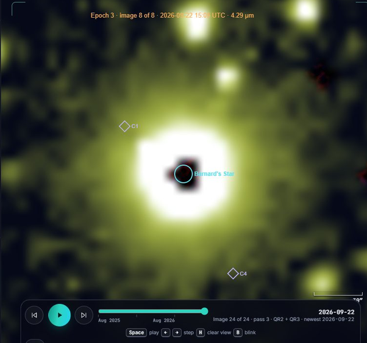
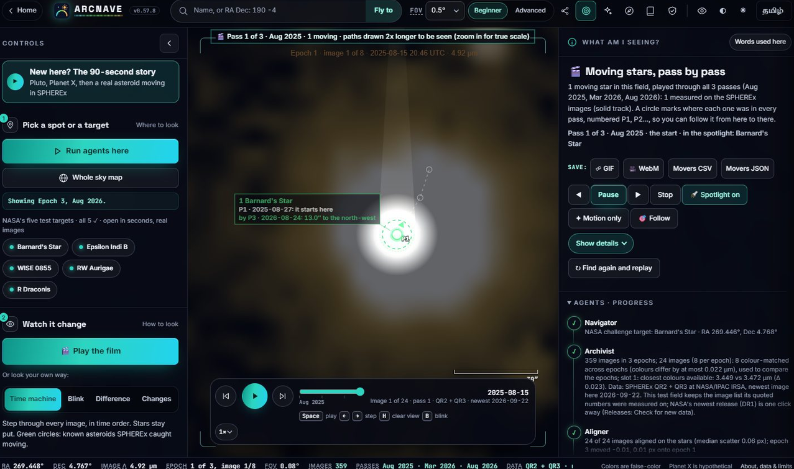
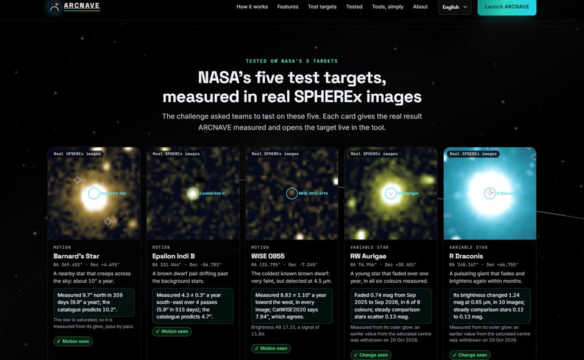
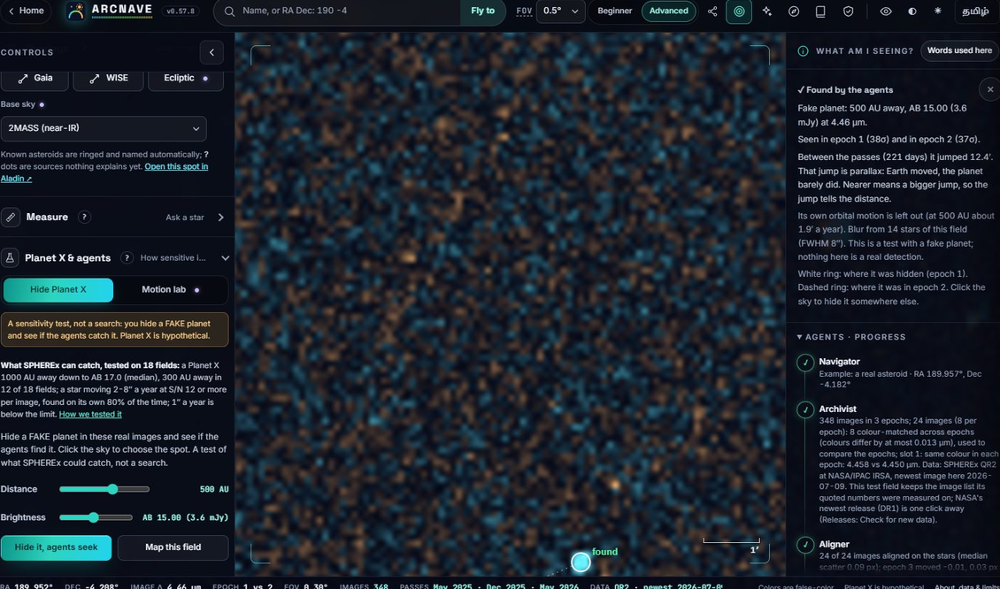
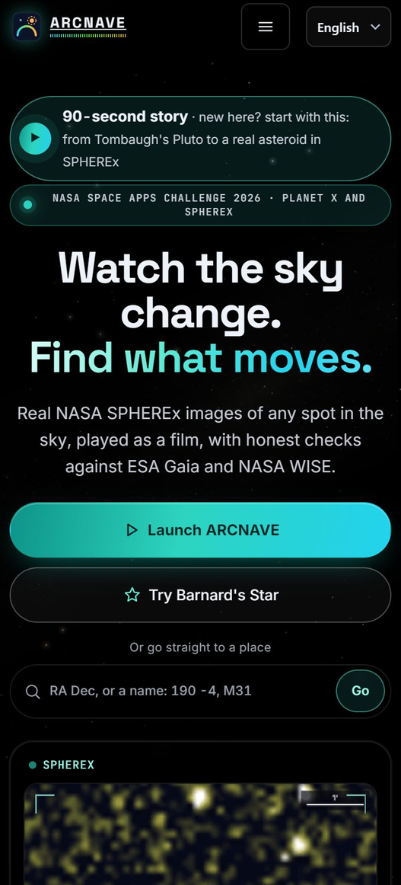
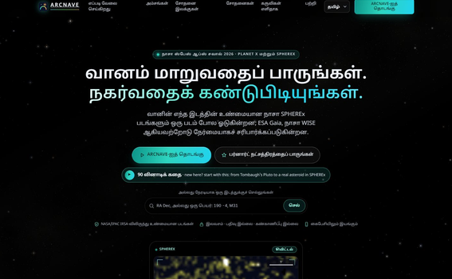

Real NASA SPHEREx images of any spot in the sky, played as a film, with every mover measured.
SPHEREx photographs the whole sky every six months in 102 infrared colours.
Movers hide among millions of sources.
In 1930 Clyde Tombaugh found Pluto by blinking two plates. That power belongs in everyone’s hands.



IRSA TAP lists every SPHEREx image (QR2, QR3, DR1)
4 MB, not 65 MB: only the rows needed, from NASA's AWS copy
pipeline FLAGS and zodiacal light removed
every image registered on ESA Gaia DR3 stars
PSF fits, motion through the passes
Gaia DR3, NASA WISE/ CatWISE2020, SkyBoT, MPC, JPL Horizons

| TARGET | MEASURED BY ARCNAVE | REFERENCE | VERDICT |
|---|---|---|---|
| Barnard's Star | 9.7" north in 359 days (9.9"/yr) | catalogue 10.2" | ✓ Motion seen |
| Epsilon Indi B | 4.3 ± 0.3"/yr over 4 passes | catalogue 4.7" | ✓ Motion seen |
| WISE 0855 | 8.82 ± 1.10"/yr, 11.8σ | CatWISE2020 7.94" | ✓ Agrees |
| RW Aurigae | faded 0.74 mag in 6 of 6 colours | comparison stars 0.13 mag | ✓ Change seen |
| R Draconis | changed 1.24 mag at 0.85 µm | comparison stars 0.12-0.13 mag | ✓ Change seen |


